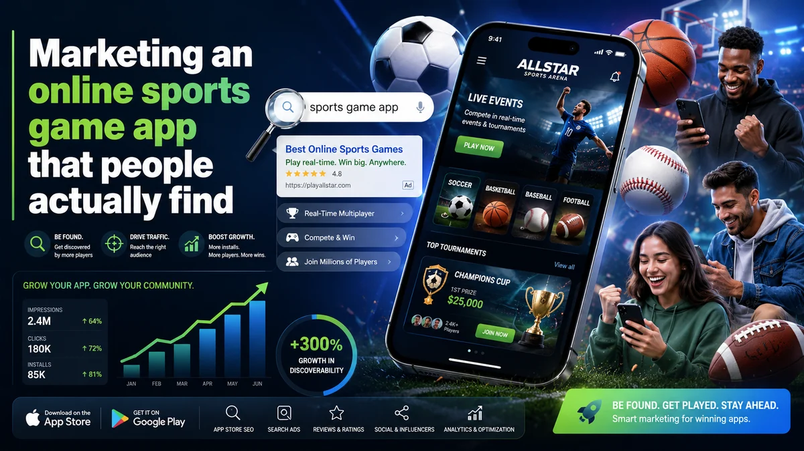

Marketing an online sports game app that people actually find
A great sports game is not enough on its own. App stores are crowded, and most installs start with a search — in the store, on Google, or from a creator. Here is how we make a sports game app discoverable the durable way.
Online sports games — football managers, arcade basketball, cricket and racing titles — live in two of the most competitive places on the internet: the app stores and Google search. Players rarely stumble onto a game by accident. They search "best football game offline", read a comparison, watch a clip, then tap install. Winning that journey takes the same discipline as ranking a website, applied to a few extra surfaces.
Two search engines, not one
For an app, the App Store and Google Play are search engines, and their ranking logic rewards relevance and quality much like Google web search does. App Store Optimization (ASO) is the equivalent of on-page SEO:
- Keyword-rich metadata. The app title, subtitle and description should reflect how players actually search — by sport, mode and platform — without stuffing.
- Creative that converts. The icon, screenshots and preview video are your "search snippet." Strong creative lifts the tap-through and install rate that stores use as ranking signals.
- Ratings and reviews. Genuine, recent reviews are a major trust and ranking factor. They must be earned — never bought or incentivised, which breaks store policies.
- Engagement and retention. Stores favour games people keep playing, so day-1 and day-7 retention quietly shape your visibility.
Don't ignore the open web
A surprising share of installs begins on Google, not inside a store. That is where classic SEO earns its place: a fast landing page and a content hub that rank for "how to play", "tips", "best teams" and comparison queries. Each of those pages can carry a direct download link, turning organic readers into players. Reviews on trusted gaming sites and coverage from creators add the authority that both Google and the stores reward.
Localize for Asian players
Sports fandom is intensely local — the leagues, teams and language all change by market. Across Korea, Japan and Southeast Asia we localize the store listing, keywords and creative natively rather than translating them, and account for Naver in Korea alongside Google. A football game framed around the right local league will always out-convert a generic global listing.
Grow it the safe way
It is tempting to chase rankings with fake reviews, bot installs or incentivised download campaigns. These violate both Google and app store policies, and the platforms are good at detecting and penalising them — a removed listing costs far more than doing it properly. We build visibility through real ASO, real content and real community, so growth compounds instead of collapsing.
Frequently asked questions
Is ASO different from SEO?
They share the same principles — relevance, quality and trust — but ASO applies them inside the app stores, while SEO works on the open web. The best app campaigns run both together so they reinforce each other.
How do I get my game's website to rank on Google?
Build genuinely useful pages around what players search for — guides, tips and comparisons — on a fast, well-structured site, then earn links and coverage from relevant gaming media. It is the same durable, guideline-safe SEO we apply to any site.
Do I need a different approach for Korea and Japan?
Yes. Keywords, creative and even the featured sport should be localized natively, and in Korea you should account for Naver as well as Google. Translated-only listings consistently underperform.
Launching or growing a game app?
Get a free, no-obligation review of your app's discoverability across the stores and Google. We'll show you where the installs are and how to capture them.
Chat on WhatsApp →